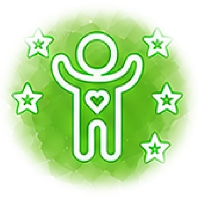
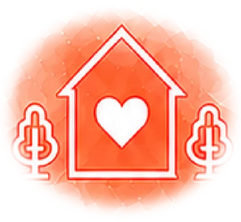
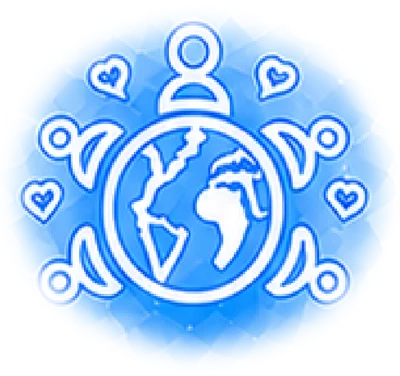
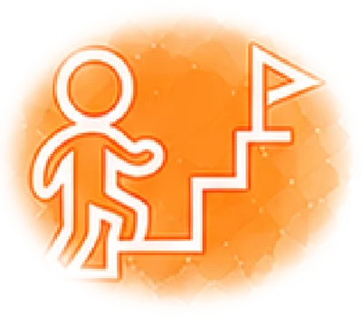
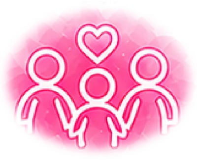
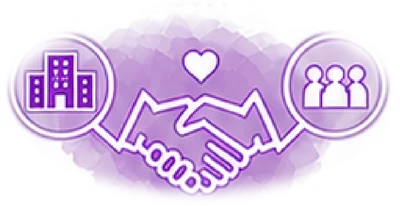

イメージ写真
イメージ写真OUR POLICY
運営方針

1個性の尊重
一人ひとりの発達段階や特性、個性を理解した支援を行います。

2安心・安全な環境づくり
子どもたちが安心して過ごせる居場所を提供し、心身の安定を大切にします。

3多文化共生の尊重
国籍・文化・言語の違いを尊重し、お互いを理解し合える環境づくりを行います。

4社会性と自立の支援
遊びや生活活動を通して、社会性やコミュニケーション能力を高め、主体的に生きる力を育む。

5家族のような温かい関係づくり
子ども・保護者・職員が安心して過ごせる、温かく信頼できる環境を大切にします。

6関係各所と連携した支援体制
保護者・地域・関係機関と連携し、子どもたちの成長を共に支援します。
OUR GOALS
こんな姿を いっしょに目ざします
イメージ写真MESSAGE
管理者より
「うちの子は、ほかの子とちがうのではないか」。はじめてご相談にみえる方の多くが、その不安を抱えていらっしゃいます。
ちがうことは、直さなければならないことではありません。困っているところに手を貸し、得意なところを伸ばす。それだけで、暮らしはずいぶん過ごしやすくなります。わたしたちの仕事は、そのお手伝いだと考えています。
かみのてには、日本語が家庭のことばでないご家族も通っています。ことばが分からないせいで支援が届かないということが起きないよう、母語でお話しできるスタッフを置いています。
診断がまだでも、受給者証をお持ちでなくてもかまいません。まずは一度、ようすを見にいらしてください。
かみのてKIDS・かみのてSMILE 管理者
 イメージ写真
イメージ写真※ 基本理念と運営方針は、事業所からいただいたものです。目ざす姿・ごあいさつは、これまでにうかがったお話から組んだ仮の案です。管理者のお名前は取材のときにうかがって入れます。
CONTACT
まずは 見にきてください
どんな場所で、どんなふうに過ごすのか。見ていただくのがいちばん分かりやすいです。
受給者証をお持ちでなくても、診断がまだでも、ご相談だけでかまいません。

写真はイメージです